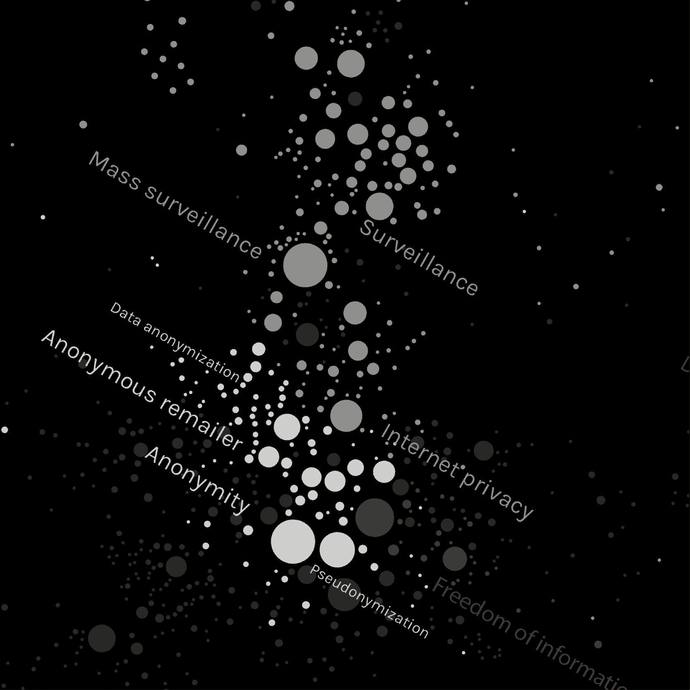
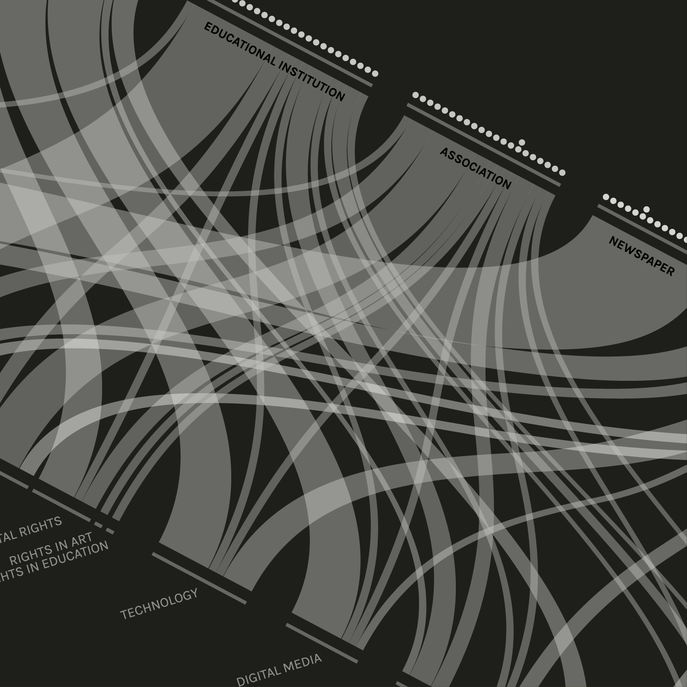
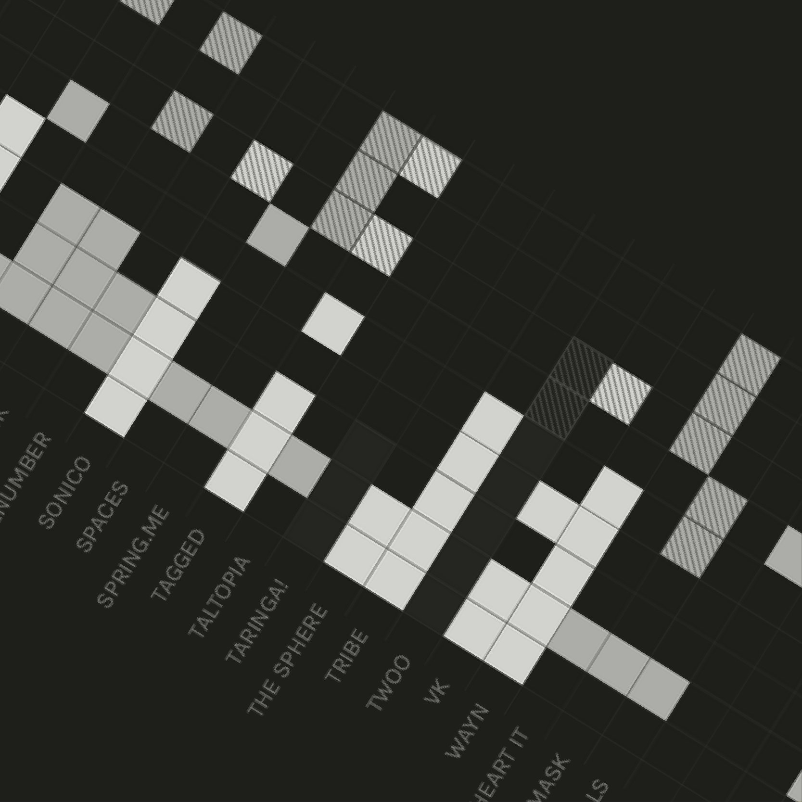
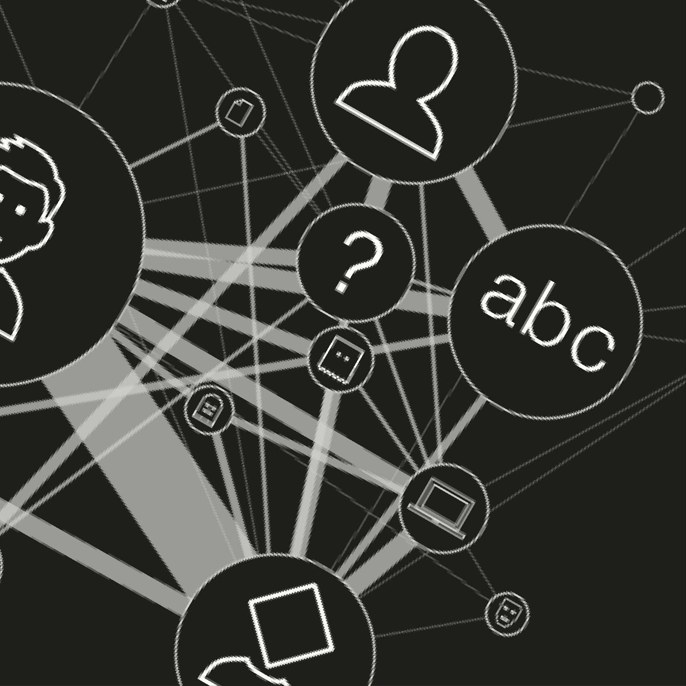

In the Nineties a satirical vignette representing two dog in front of a computer appeared on The New Yorker: “On the internet - one says to the other - no one knows you are a dog”; e-mails and the web were the news of the time. Internet was born as a free space where none had a name. Nowadays, when on the web lots of people are worried about their privacy and their identifiability, this vignette seems to be ironic. Is it possible to be anonymous? Anonymity derives from the greek word 'anonymia', which means "without a name" or "namelessness". It is the status of being unknown, unreachable or untrackable. The controversy around online anonymity includes different debate's themes. Anonymity is a matter of freedom of expression, privacy, free flow of information, circulation of thoughts, avoidance of censorship and oppression, avoidance of discrimination and harassment. But it also means illegal activities, cyber-anonymity, cyber-crime, cyber-bullying, antisocial and irresponsible behaviour and lack of credibility. The first need in our research was to focus and to formulate some specific queries choosing a particular theme. Using Google.com as a tool for the topic exploration, we decided to investigate how the freedom of expression is linked to online anonymity. This topic area is meant to leave aside everything that concerns technologies (as anonymizer) to overcome internet firewalls and what is strictly linked to the “big brother’s watching you” fear. When people decide to not reveal their identity to express their opinion because of fearing reprisal, harassment or prejudice, it is called anonymous expression. How could this generate a controversy? The two quotes below will give an example: “Protections for anonymous speech are vital to democratic discourse. Allowing dissenters to shield their identities frees them to express critical minority views” McIntyre v. Ohio Election Commission (court case, 1995). "People behave a lot better when they have their real names down. [...] I think people hide behind anonymity and they feel like they can say whatever they want behind closed doors" Randi Zuckerberg (Facebook marketing director). As the debate is much more large and complex, the goal of our research is mapping the controversy in order to better understand it.
By Luca Alberton, Marta Ambrosetti, Giulia De Rossi, Cecilia Della Longa, Valeria Quircio
The role of anonymity
in the free expression field
chapters

The encyclopedic point of view
Wikipedia is always one of the first link appearing on a google.com research. It is, so, our first experimentation field. Choosing the five most relevant seeds, which are the articles linked to them?

The battlefield of the debate
Destroying and rebuilding the controversy: the dialogue between the ever connected statements and their speakers. Who are the actors and what do they say? How are they connected?

Playing cards of an online social life
How social networks take part in the debate? This chapter is an experiment to discover the amount of social services that allow anonymity by exploring the authentication fields they require.

Anonymous faces
This experimentation field is meant to explore which is the general perception of the theme through the images analysis. What is associated to the word "anonymity"? Is freedom of expression emerging through pictures?
project by
- Luca Alberton
- Marta Ambrosetti
- Giulia De Rossi
- Cecilia Della Longa
- Valeria Quircio
Faculty
- Paolo Ciuccarelli
- Marco Fattore
- Stefano Mandato
- Donato Ricci
- Salvatore Zingale
Teaching Assistants
- Matteo Azzi
- Daniele Ciminieri
- Michele Mauri
- Azzurra Pini
- Giorgio Uboldi